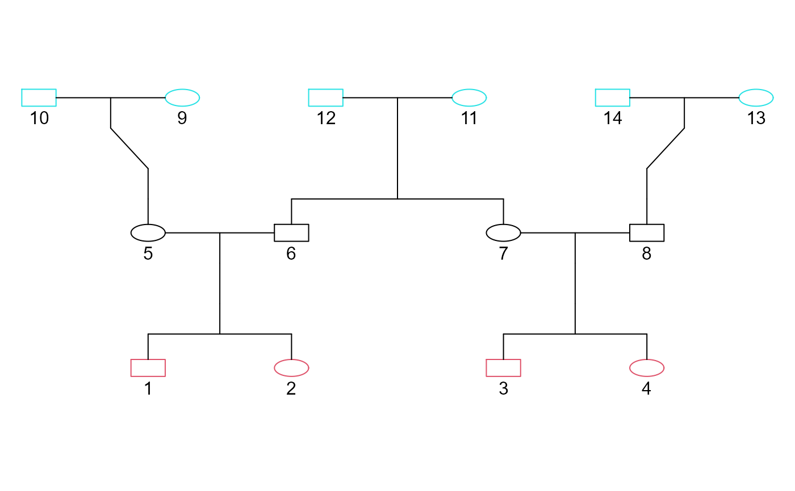

gen.simuHaplo.RdGene dropping from founders to specified probands. If sequence data is provided the function can translate results to sequences, otherwise will produce proband haplotypes with segments labelled w.r.t. the founder the segment came from
gen.simuHaplo(gen, pro, ancestors, simulNo = 1, RecombRate=c(0,0), Reconstruction =0, BP=0, Hapfile=NULL, Mapfile=NULL, seed= 0, outDir = getwd())
| gen | An object of class GLgen obtained with gen.genealogy, gen.lineages or gen.branching. Required. |
|---|---|
| pro | Vector of proband id numbers to be included. Required. |
| ancestors | Vector of ancestors id numbers to be included |
| simulNo | Number of simulations to run. Results from extra simulations will be included in the same output text file |
| RecombRate | The expected number of recombination events in the simulated region per meiosis. E.g.: if simulating a region of 1Centimorgan, recombination rate should be 0.01 Vector of 2 elements, the first is recombination rate for male offspring, the second element specifies rate for female offspring |
| Reconstruction | Indicator specifying whether the simulation results should be converted into sequence data. Default is Reconstruction = 0, which is no sequence data Reconstruction. If Reconstruction = 1 then user must provide BP, Hapfile, and Mapfile |
| BP | The length of the simulated region in basepairs. Only required if Reconstruction = 1 |
| Hapfile | The name of a file in the working directory containing sequence data for the founder haplotypes. Each line specifies a haplotype, and should be the same format as the example |
| Mapfile | The name of a file in the working directory which specifies the locations of the SNPs of Hapfile. This file should contain only one number per each line, each line specifies the position (in BP) of the corresponding SNP in the hapfile |
| seed | this will seed the random number gennerator (Mersenne twister) for the simulation. Default is seed = 0 which will choose a random seed. Use the seed for replication purposes |
| outDir | The directory to write output files to. Default is the current working directory. |
A matrix with 3 columns: simulNo, NumMeioses, NumRecomb Will generate output files "Proband_Haplotypes.txt" and "All_nodes_haplotypes.txt" in the specified output directory. If Reconstruction = 1 will also generate "reconstructed_haplotypes.txt"
#load the genealogy table sample_gen_file<-system.file("extdata","sample_gen.csv",package="GENLIB") sample_gen_table<-read.csv(sample_gen_file) #convert the genealogy table into a GENLIB object sample_gen<-gen.genealogy(sample_gen_table, autoComplete = TRUE) #visualize the genealogy gen.graph(sample_gen)probands <- gen.pro(sample_gen) founders <- gen.founder(sample_gen) # Simulate the gene dropping from founders to probamds # Generate haplotypes of probands, with segments labelled corresponding to the founder # If "Reconstruction = 0" as the default so no sequence data is required, # and the generated haplotypes will be in terms relative position and founder ID gen.simuHaplo(sample_gen,pro = probands, ancestors= founders, simulNo=1, RecombRate=c(0.01,0.02), seed=0, outDir=tempdir())#>#> #>#> simulNo numRecomb numMeioses #> [1,] 1 0 16# The output files will be written to the working directory. # If you do not wish to give access to this directory, # then change the working directory with the command setwd() before running the function #We can also re-run the function with the Reconstruction = 1 option to use sequence data # this will generate a file of simulated proband haplotypes with sequence data # But we must provide the function with a Hapfile and Mapfile. #Hapfile contains the sequence (SNP) data for each founder haplotype. # Each line should consist of only 2 elements: # the founder haplotype ID #, and the sequence, seperated by a single whitespace # the sequence data must be a string and use any characters, # but must be the same length between all founders. # Each position in the string corresponds to a BP position in the haplotype, # so any missing data should be encoded, using a missing data character and not skipped # Example hapfile: Hapfile<-system.file("extdata","sequences.txt",package="GENLIB") #Mapfile contains the base pair positions of all the SNP's in the Hapfile. #Each line describes the position of the corresponding character in the sequence # there should be no empty lines or whitespaces. # Example mapfile: Mapfile<-system.file("extdata","SNP_positions.txt",package="GENLIB") gen.simuHaplo(sample_gen,pro = probands, ancestors= founders, simulNo=2, RecombRate=c(0.01,0.02), Reconstruction = 1, BP= 1000000, Hapfile= Hapfile, Mapfile = Mapfile, seed=777, outDir=tempdir())#>#> #> #>#> simulNo numRecomb numMeioses #> [1,] 1 0 16 #> [2,] 2 0 16#Since we used the Reconstruction=1 option, we will now get an additional output file # with sequence data for the proband haplotypes.